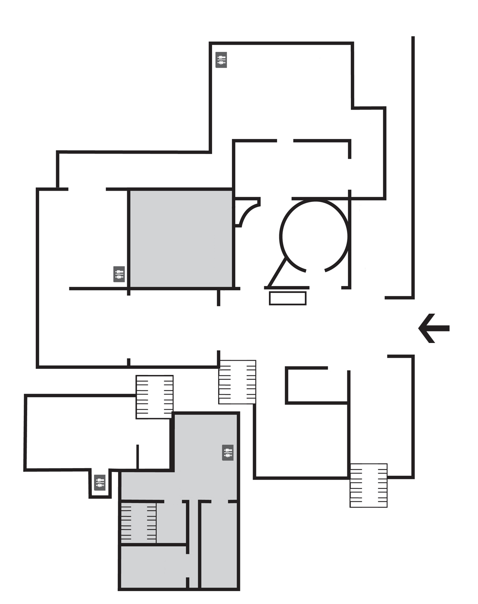

<ion-view title="first floor"  class="mappa">
    <ion-content>
        <ion-list>
            <ion-item class="item-image" style="height:600px;">
                <ion-content scrollbar-x="true" scrollbar-y="true">
                    <div style="z-index:1">
                        <i class="N ion-ios-navigate-outline"></i>
                    </div>
                    <div class="map" style="height:100%; transform:scale({{1+(scale/100)}}) rotate(41deg);">
                        
                        <div ng-repeat="marker in item.markers" style="position:absolute; top:{{marker.lat}}%; left:{{marker.lng}}%;"><i class="point ion-ios-circle-filled"></i></div>
                        <!--<div style="position:absolute; top:{{top}}%; left:{{left}}%;"><i class="point ion-ios-circle-filled"></i></div>-->
                    </div>
                </ion-content>
            </ion-item>

            <div class="item range">
                <i class="icon ion-volume-low"></i>
                <input type="range" name="volume" ng-value="30" ng-model="top">
                <i class="icon ion-volume-high"></i>
            </div>

            <div class="item range range-positive">
                <i class="icon ion-ios-sunny-outline"></i>
                <input type="range" name="volume" min="0" max="100" ng-value="30" ng-model="left">
                <i class="icon ion-ios-sunny"></i>
            </div>

            <div class="item range range-positive">
                <i class="icon ion-ios-sunny-outline"></i>
                <input type="range" name="volume" min="0" max="360" ng-value="30" ng-model="deg">
                <i class="icon ion-ios-sunny"></i>
            </div>

            <div class="item range range-positive">
                <i class="icon ion-ios-sunny-outline"></i>
                <input type="range" name="volume" min="0" max="400" ng-model="scale">
                <i class="icon ion-ios-sunny"></i>
            </div>

        {{top}},{{left}}

        </ion-list>
    </ion-content>
</ion-view>